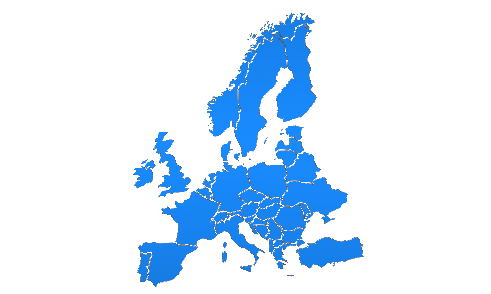
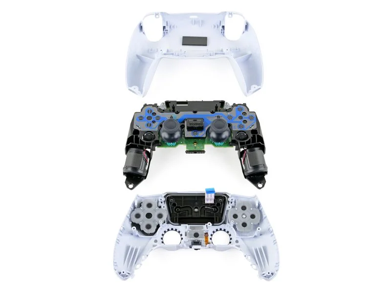
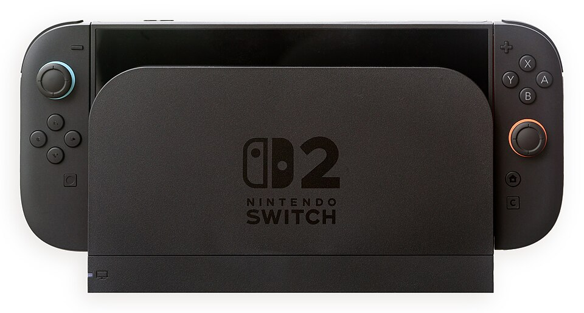

¡Expandimos el negocio!
A partir del jueves 18 de noviembre aceptamos encargos a nivel europeo.
Hacer pedidoSomos un taller de reparaciones pensado para dispositivos de juego, especializados en consolas, mandos, tecnología VR y AR, PCs y demás.
Hazlo tú mismo
Los fallos que suelen presentar los dispositivos suelen ser fáciles de reparar, y suponen un coste menor a comprar un dispositivo totalmente nuevo. Por eso en NewFrame, junto con nuestro compromiso medioambiental al alargar la vida útil de productos digitales, creemos en las segundas oportunidades para los dispositivos.
Mediante esta web se pueden realizar encargos para la reparación de equipos de todo tipo, aunque también tenemos las herramientas y conocimientos necesarios para la revisión, limpieza, modificación y mantenimiento en consolas y relacionados.
Además, una parte de nuestro equipo está meramente dedicada a la investigación de lo último en este sector, y cómo podemos ser los primeros en proveer un servicio que al menos, durante los primeros meses de salida de alguna novedad, seamos en quienes los jugadores pueden contar.

A partir del jueves 18 de noviembre aceptamos encargos a nivel europeo.
Hacer pedido
Repara tu mando tú mismo y no esperes a que nadie lo haga por ti.
Ver guía
Ahora puedes mandar a reparar tu consola Nintendo Switch 2 y solucionar el brickeo. ¿A qué esperas?
Hacer pedido